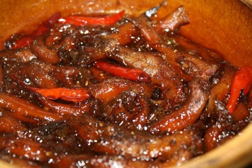

Cá cơm kho tiêu

- Khẩu phần 4
- Chuẩn bị 20 phút
- Thực hiện 30 phút
Nguyên liệu
- 300g cá cơm
- 4 củ hành tím
- 1 trái ớt
- 1 gói Gia vị hòan chỉnh Cá Kho
- 2 thìa súp dầu ăn
- 1 thìa cà phê tiêu
Hướng dẫn thực hiện
- Cá cơm rửa sạch với muối, bỏ đầu, ướp với 1 gói Gia vị hoàn chỉnh
Cá Kho, để thấm 15 phút
- Ớt xắt lát. Hành tím rửa sạch, bỏ vỏ, xắt lát mỏng, phi vàng với 1 thìa
súp dầu ăn
- Làm nóng dầu ăn còn lại, cho cá đã ướp vào đảo nhẹ tay cho cá săn lại và
thấm gia vị, thêm nước vào xăm xắp mặt cá, cho hành phi và ớt vào, kho đến
khi nước sánh lại là được. Tắt bếp, rắc tiêu lên, dùng với cơm trắng rất
ngon.